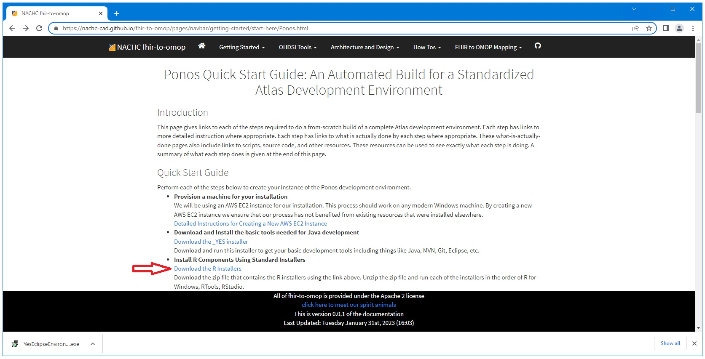
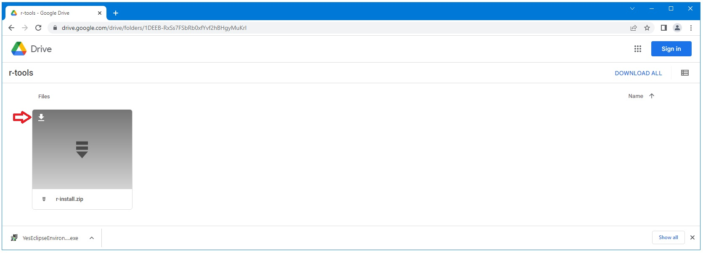
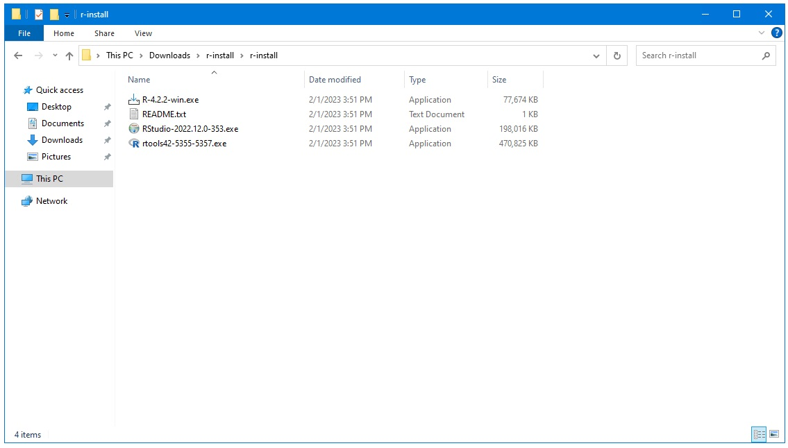

Ponos Quick Start Guide: Download and Install R Components
Navigate to the link below and select the download link for the R components.
https://nachc-cad.github.io/fhir-to-omop/pages/navbar/getting-started/start-here/Ponos.html

Download and unzip the file found there.

Run each of the installers found there in the order shown below.
Accept all defaults.
